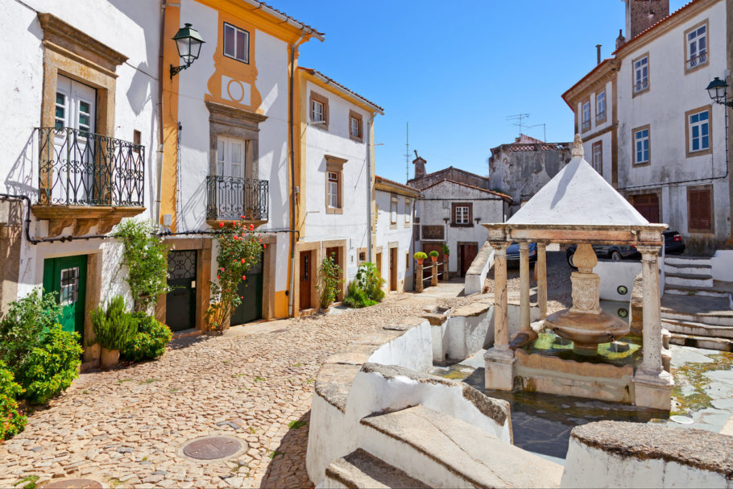
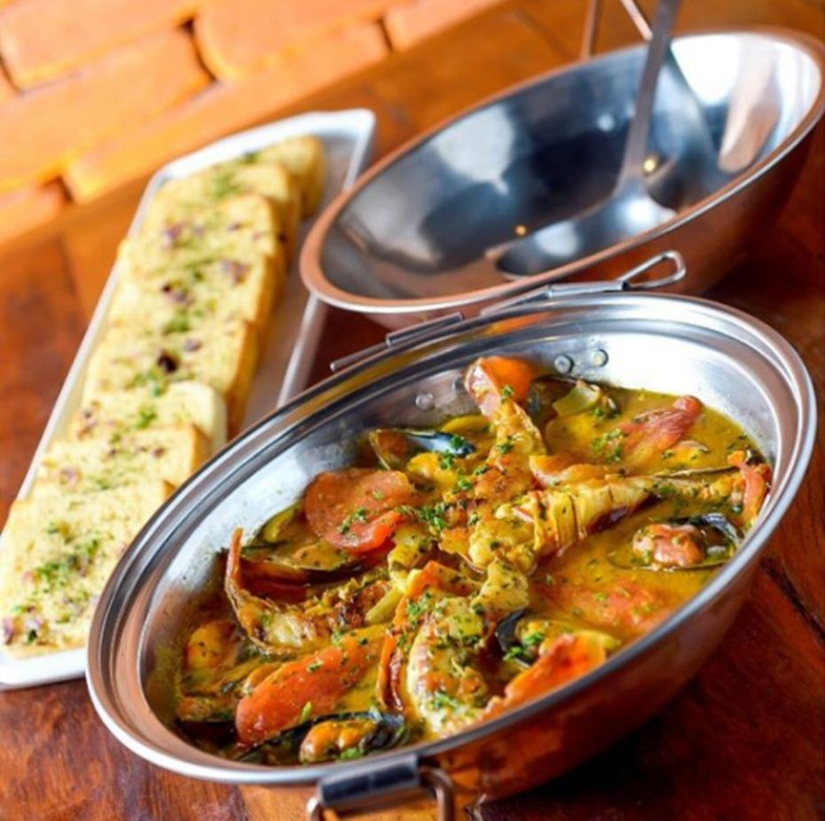
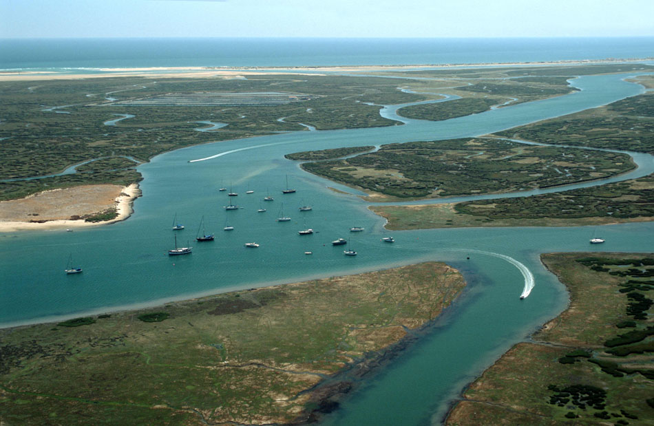
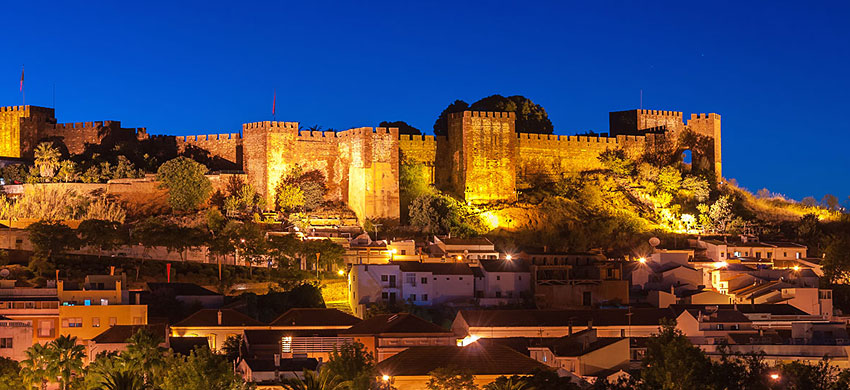

.png)


ALGARVE
PASSE O MOUSE

O Algarve, um tesouro ensolarado no sul de Portugal, é um destino que cativa com suas praias deslumbrantes, vilarejos pitorescos e estilo de vida descontraído. Esta região é famosa por suas paisagens costeiras, clima ameno e atividades variadas que atraem tanto os amantes do mar quanto os interessados em cultura e história.
PASSE O MOUSE

A costa do Algarve é caracterizada por impressionantes formações rochosas, falésias dramáticas e grutas marinhas esculpidas pela ação do mar. Um passeio de barco ao longo da costa é uma maneira emocionante de explorar essas maravilhas naturais.
PASSE O MOUSE
Cidades como Lagos, Albufeira, Faro, Tavira e Vilamoura oferecem uma combinação de charme histórico e infraestrutura turística moderna. Os centros históricos dessas cidades estão repletos de ruas de paralelepípedos, arquitetura tradicional e praças pitorescas.
PASSE O MOUSE
A culinária algarvia é influenciada pelo mar. Pratos de peixe e frutos do mar frescos são uma especialidade, como o "cataplana" (um ensopado de peixe e mariscos cozido em um recipiente de cobre). Além disso, o "frango piri-piri" é uma iguaria popular, temperada com uma mistura de especiarias e servida grelhada.
PASSE O MOUSE
O Parque Natural da Ria Formosa, com suas lagoas e ilhas, é uma área de conservação rica em biodiversidade. O Parque Natural do Sudoeste Alentejano e Costa Vicentina oferece trilhas deslumbrantes e vistas panorâmicas.
PASSE O MOUSE
Além das praias, o Algarve possui um rico patrimônio histórico. Cidades como Silves e Tavira são marcadas por castelos antigos e outros vestígios do passado árabe da região.